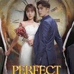

 | Film ini menceritakan mengenai kisah balas dendam seorang pelukis bernama Han Ji Yoo. Han Ji Yoo tumbuh tanpa rasa kasih sayang dari keluarga angkatnya, yakni Han Jin Woong dan Lee Jung Hye.
Han Ji Yoo dikucilkan oleh keluarganya termasuk saudaranya yang bernama Han Yoo Ra. Han Ji Yoo kemudian menikah dengan Jung Se Hyeok
Malangnya, Han Ji Yoo tahu bahwa sang suami mencintai Han Yoo Ra. Di hari yang sama, Han Ji Yoo mengalami kecelakaan mobil.
Menariknya setelah dari koma karena kecelakaan, Han Ji Yoo sadar bahwa ia bangun di masa saat ia bertunangan dengan Jung Se Hyeok. Ia pun bertekad untuk mengubah nasibnya dan balas dendam kepada keluarganya.
Han Ji Yoo lalu berupaya untuk mendekati Seo Do Kook, pria yang ingin dinikahi Han Yoo Ra. Seo Do Kook adalah pemuda tampan dan cerdas.
Ia juga merupakan cucu laki-laki dari pendiri Taeja Group. Han Ji Yoo ingin melakukan kawin kontrak dengan Seo Do Kook.
Seo Do Kook rela menerimanya, namun ia ingin pernikahan itu suatu hari menjadi pernikahan sungguhan.(sumber:kompas.tv) |